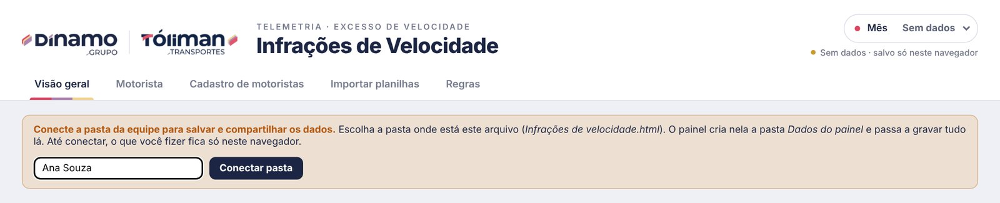
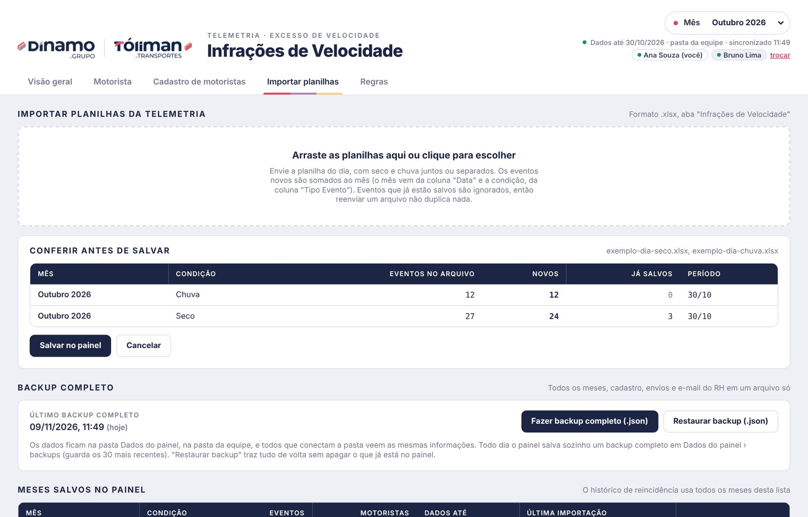
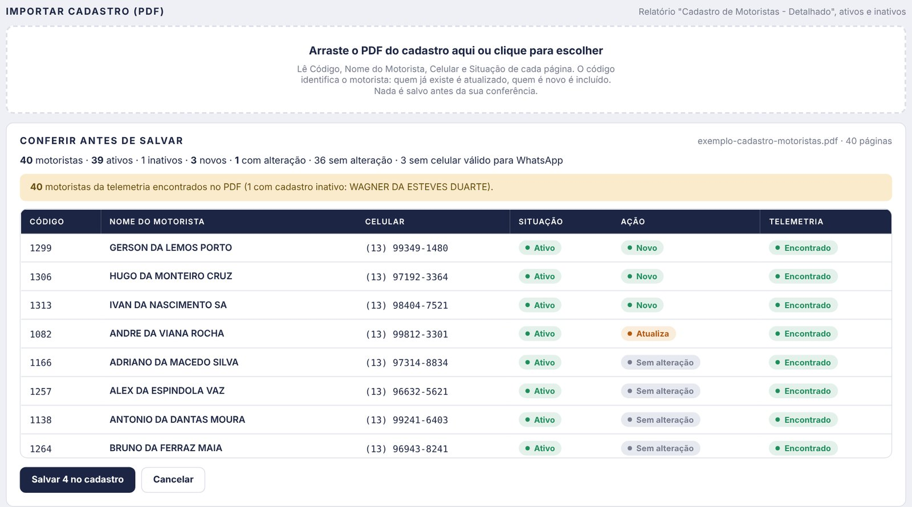
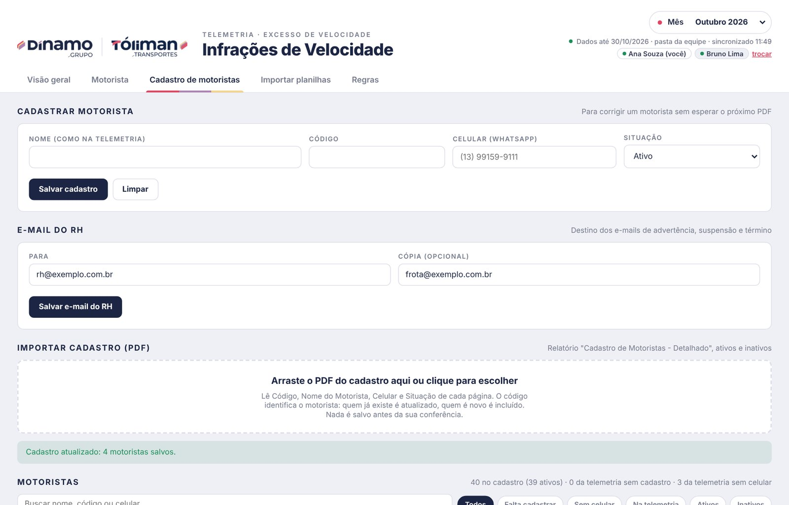
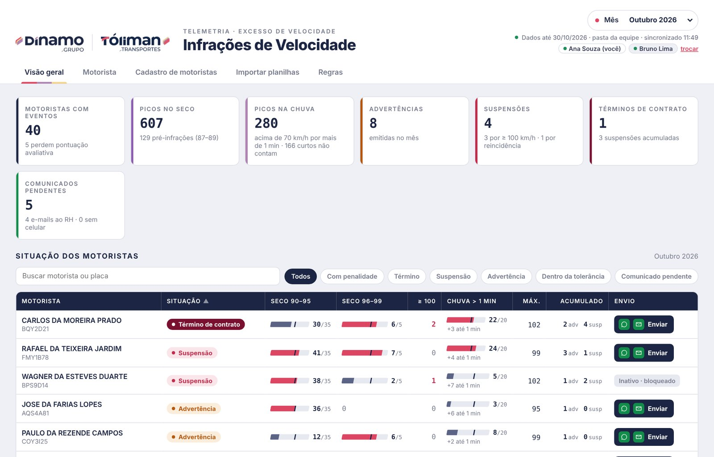
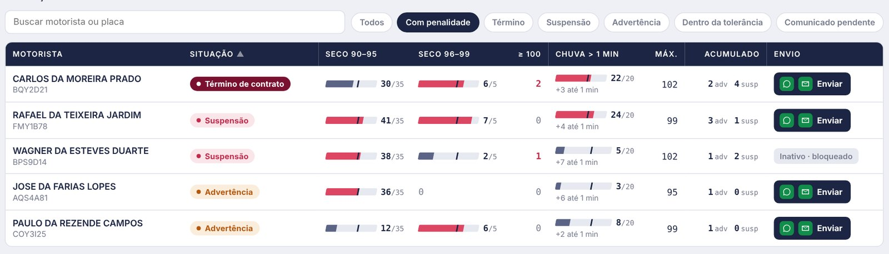
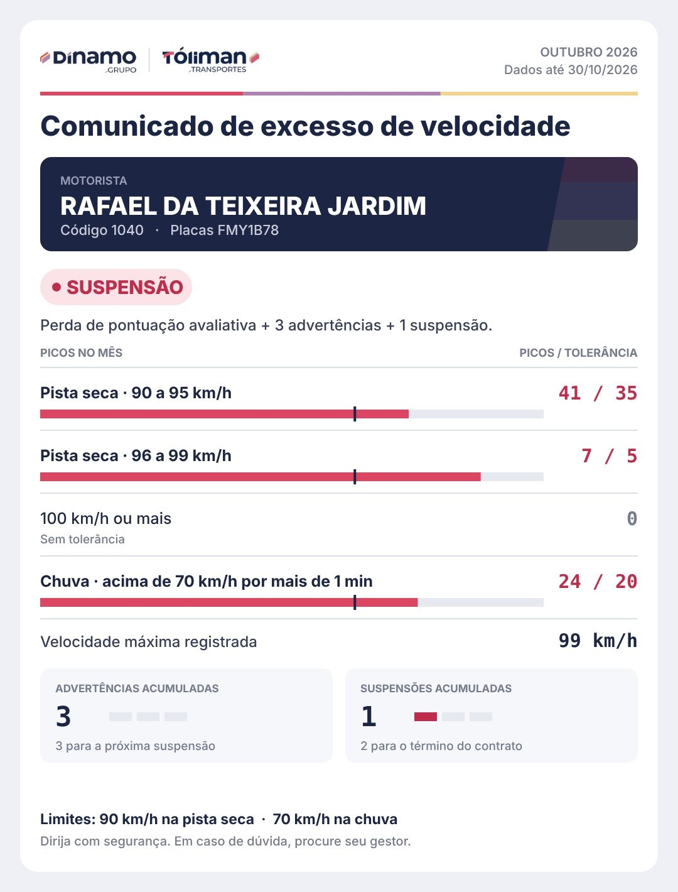
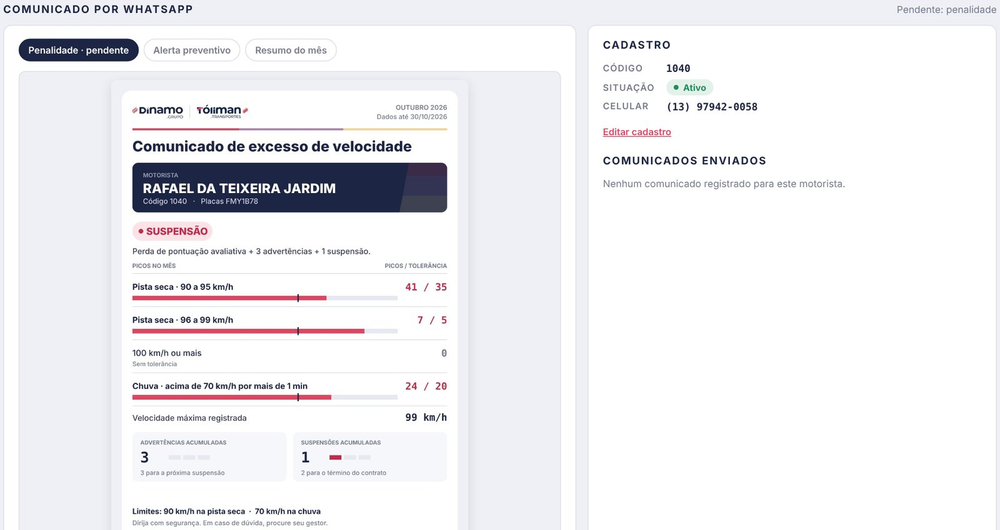
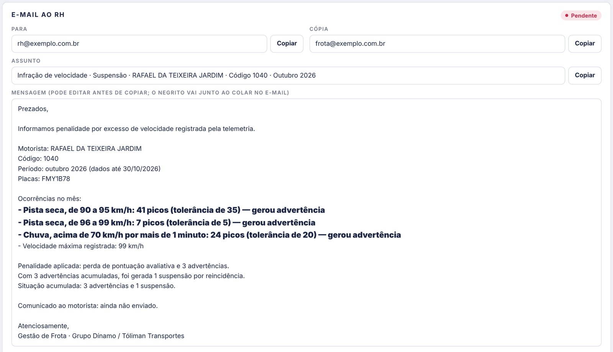
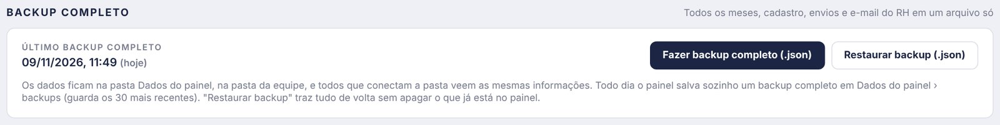

Guia completoInfrações de Velocidade
O painel lê as planilhas de excesso de velocidade da telemetria (seco e chuva), soma os picos de cada motorista no mês e aplica as regras de tolerância. Com isso ele gera o comunicado ao motorista (imagem para o WhatsApp) e o texto do e-mail ao RH. Os dados ficam na pasta do canal no Teams: todos que conectam a pasta veem as mesmas informações.
Uma vez em cada computador; depois é só abrir o arquivo
1ª vezNo Teams
Não abra o painel dentro do Teams: por lá ele não grava os dados. Se o canal não aparecer, peça para ser adicionado.
Atalho: não copia nada, todos usam a mesma pasta
Sem a opção de atalho? Use Sincronizar. Só uma das duas, nunca as duas no mesmo computador.

Na primeira conexão o painel cria a pasta Dados do painel e leva para ela o que estava só no seu navegador. Não mexa nem apague nada dentro dela.
No dia a dia: abra o arquivo pelo Explorador. Se aparecer Reconectar pasta, clique e confirme. O que um colega importa aparece para você em poucos segundos. O link trocar, ao lado do seu nome, muda o nome. O painel tem cinco abas: Visão geral, Motorista, Cadastro de motoristas, Importar planilhas e Regras; o mês fica no canto superior direito.
Os eventos novos são somados ao mês
DiárioReenviar um arquivo não duplica nada: eventos já salvos aparecem em Já salvos e são ignorados. O mês vem da coluna Data e a condição (seco ou chuva), da coluna Tipo Evento.

Do PDF "Cadastro de Motoristas - Detalhado", com ativos e inativos
Importe de novo sempre que houver motorista novo ou celular alterado. O código identifica o motorista; o nome da telemetria é ligado ao cadastro pelo nome.


O mês escolhido: totais no topo, situação de cada motorista abaixo

| O que aparece | O que significa |
|---|---|
| Totais | Motoristas com eventos, picos no seco e na chuva, advertências, suspensões, términos de contrato e comunicados pendentes. |
| Situação | Advertência, Suspensão, Término de contrato, Dentro da tolerância ou Sem motorista identificado. |
| Barras | Picos do mês em cada faixa. O traço escuro marca a tolerância; barra vermelha = tolerância estourada. |
| Acumulado | Advertências e suspensões somando todos os meses importados. |
| Filtros e busca | Com penalidade, Término, Suspensão, Advertência, Dentro da tolerância e Comunicado pendente. A busca aceita nome ou placa. |
| Envio | Enviar quando falta comunicado; o ícone verde diz qual (WhatsApp, e-mail ao RH ou os dois). Depois aparece ✓ Enviado; motorista inativo aparece como Inativo · bloqueado. |
Clique no nome do motorista ou em Enviar para abrir a aba Motorista dele. Abaixo da tabela ficam os gráficos de distribuição das velocidades no seco e na chuva.

Aba Motorista; cada envio fica registrado
Penalidade, Alerta preventivo (a partir de 80% da tolerância) ou Resumo do mês.
Ao abrir a conversa, o envio fica registrado em Comunicados enviados e sai das pendências. Se a mensagem não foi enviada, use Desfazer no registro.


O quadro E-mail ao RH aparece quando o motorista tem advertência, suspensão ou término no mês.

Se o cadastro do motorista está Inativo, o envio fica bloqueado: WhatsApp e e-mail ao RH não aparecem. Para liberar, mude a situação para Ativo no cadastro ou importe um PDF atualizado.
Automático com a pasta conectada
Todo dia o painel salva um backup completo em Dados do painel › backups e guarda os 30 mais recentes. Ele leva todos os meses, o cadastro, os envios registrados e o e-mail do RH.
Antes de uma mudança grande, como apagar um mês.
Não apaga nada que já está no painel.

Eventos restaurados são somados sem duplicar e, no cadastro, vale a versão mais recente de cada motorista. O que você restaurar aparece para toda a equipe.
Sem a pasta conectada (aviso amarelo no topo), os dados ficam só naquele navegador e o backup não é automático: o painel avisa quando um mês fecha ou o último backup tem 7 dias ou mais, e o botão baixa o arquivo. O melhor é conectar a pasta.
Picos de cada motorista no mês; acima da tolerância da faixa, penalidade
| Condição | Faixa | Tolerância/mês | Acima da tolerância |
|---|---|---|---|
| Seco | 87 a 89 km/h | pré-infração | só informativo |
| Seco | 90 a 95 km/h | 35 picos | perda de pontuação + 1 advertência |
| Seco | 96 a 99 km/h | 5 picos | perda de pontuação + 1 advertência |
| Seco | 100 km/h ou mais | nenhuma | 1 suspensão por pico |
| Chuva | acima de 70 km/h por mais de 1 min | 20 picos | perda de pontuação + 1 advertência |
| Chuva | acima de 70 km/h por até 1 min | não conta | só informativo |
3 advertências acumuladas = 1 suspensão. 3 suspensões acumuladas = término do contrato.
| Problema | O que fazer |
|---|---|
| O canal não aparece no Teams | Peça para ser adicionado ao canal Infrações de velocidade da Equipe GR. |
| Não existe "Adicionar atalho ao OneDrive" | Use Abrir no SharePoint e procure a opção lá; se não houver, use Sincronizar. |
| O atalho não aparece no Explorador | Confira se o OneDrive está conectado (nuvem perto do relógio) e aguarde alguns minutos. |
| Painel abre como texto ou dentro do Teams | Abra pelo Explorador com Abrir com › Chrome ou Edge. |
| Painel vazio ou pedindo para conectar | Clique em Reconectar pasta (ou Conectar pasta e escolha a pasta do arquivo). |
| Aviso vermelho "Não foi possível gravar na pasta" | Confira o OneDrive e o acesso ao canal. O painel guarda as alterações e tenta de novo sozinho. |
| O que um colega fez não apareceu | Aguarde o OneDrive sincronizar (segundos a poucos minutos) e deixe a pasta em Sempre manter neste dispositivo. |
| "Este navegador não grava na pasta" | Você está no Firefox ou no Safari: abra no Chrome ou no Edge. |
| Botão do WhatsApp não funciona | Motorista sem celular válido ou com cadastro inativo: corrija na aba Cadastro de motoristas. |
| Motorista como "Falta cadastrar" | O nome da telemetria não foi achado no PDF: cadastre com o código do sistema. |
| Importei a mesma planilha duas vezes | Sem problema: eventos repetidos são ignorados. |
| Leitor de planilha ou PDF não carregou | Verifique a internet e recarregue a página. |
| O nome no topo está errado | Clique em trocar, ao lado do seu nome. |